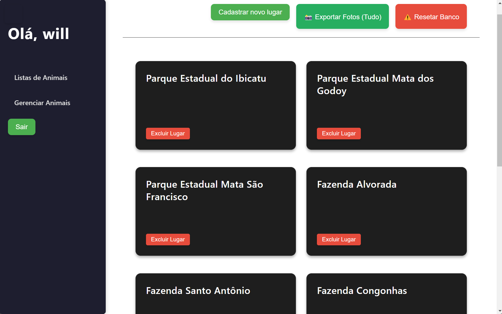
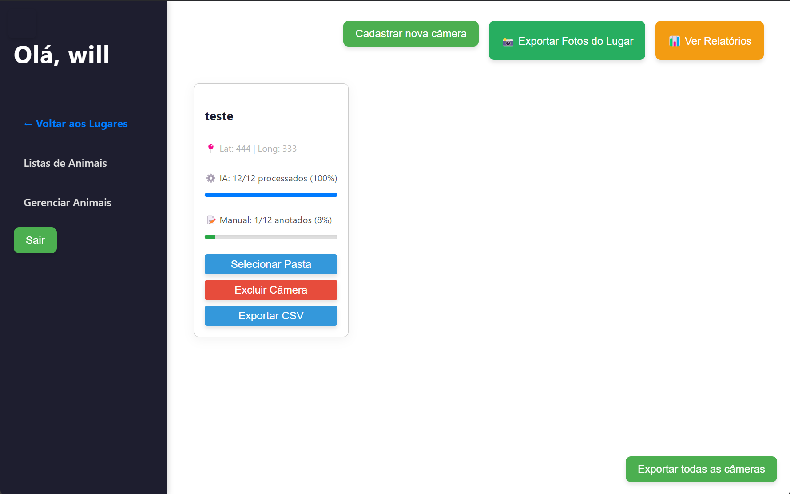
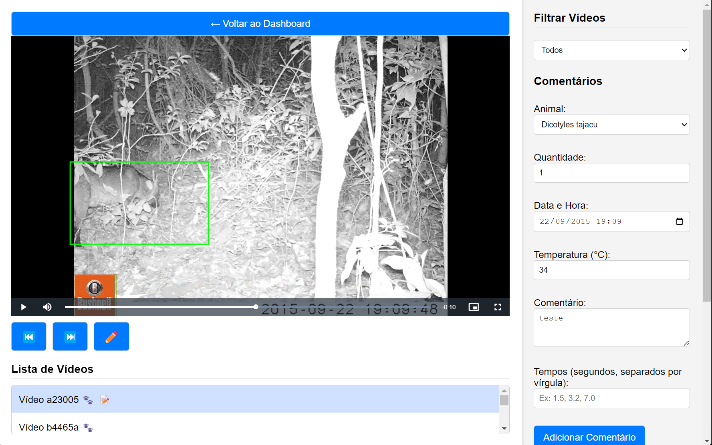

Conheça a Interface da Aplicação

Gestão de Locais
Controlo total sobre as diferentes áreas de estudo, parques e fazendas. Organize a sua investigação exportando fotografias e gerindo a base de dados de forma intuitiva.

Monitorização de Progresso
Acompanhe em tempo real o estado do processamento da Inteligência Artificial e das anotações manuais para cada câmara registada.

Anotação e Identificação
Leitor de vídeo integrado com caixas de delimitação (bounding boxes) da IA. Registe a espécie, quantidade, clima e comentários com precisão milimétrica.
Quer utilizar o Napi Biodiversidade?
A aplicação encontra-se atualmente disponível para investigadores e profissionais da área. Preencha o nosso formulário para solicitar o acesso e receber o link de transferência do instalador oficial.
Solicitar Acesso à Aplicação